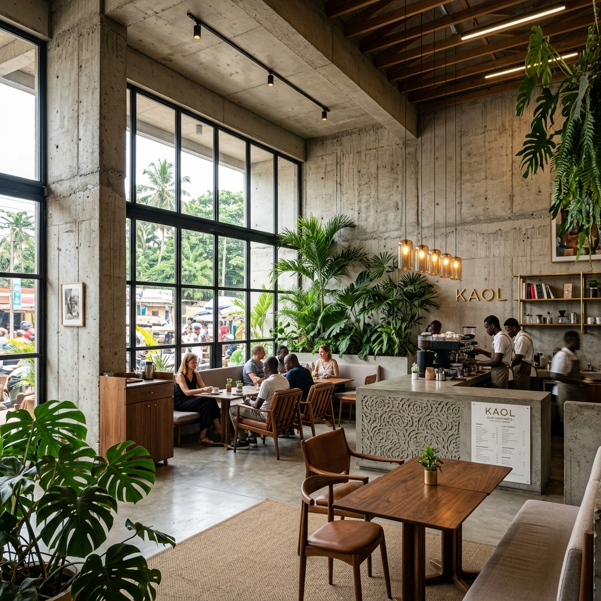
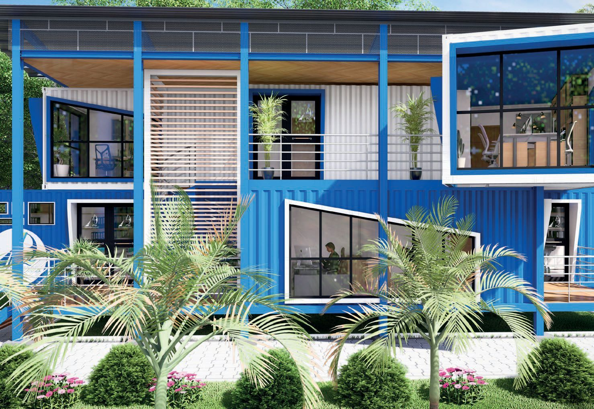
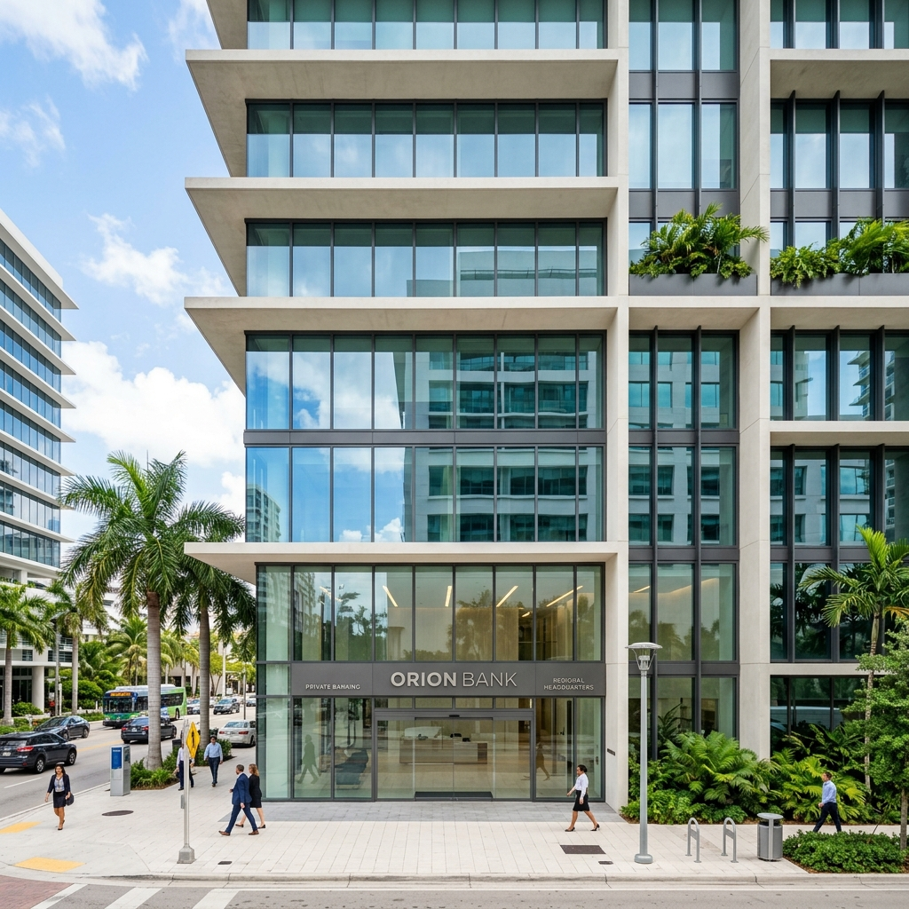
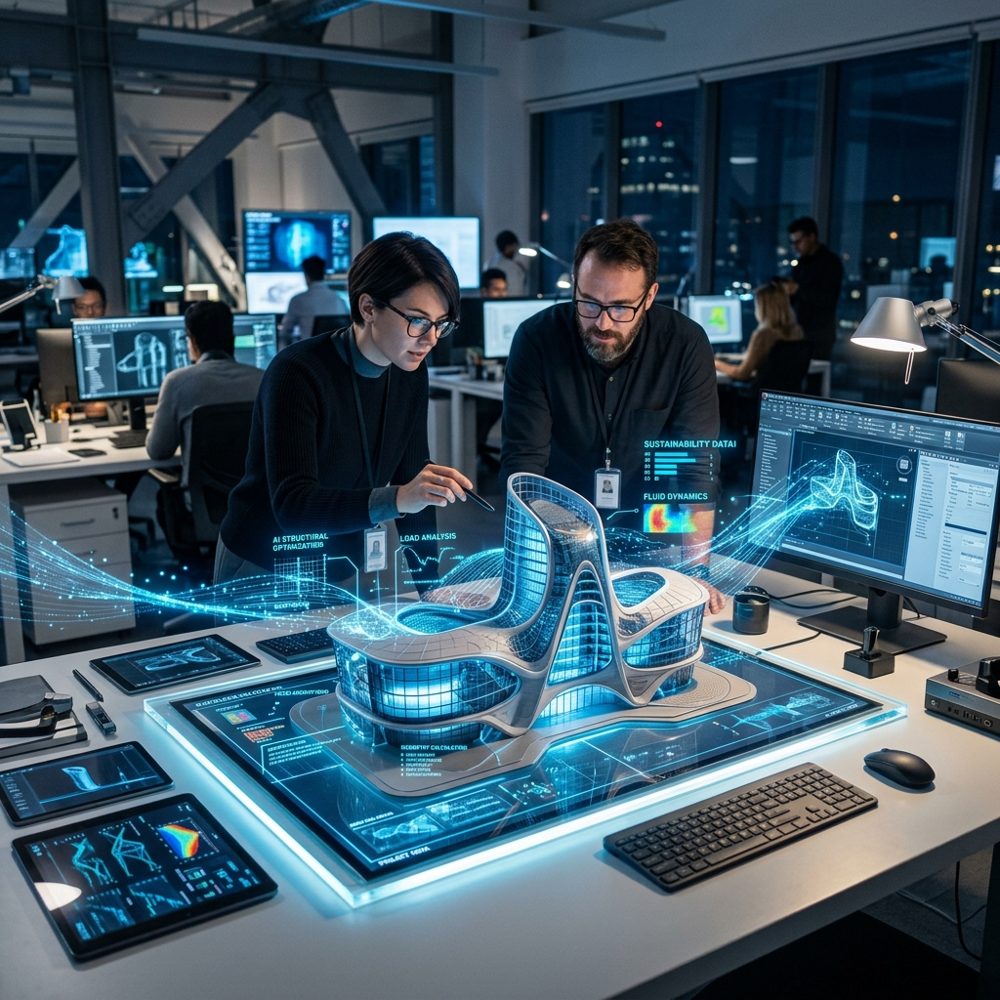
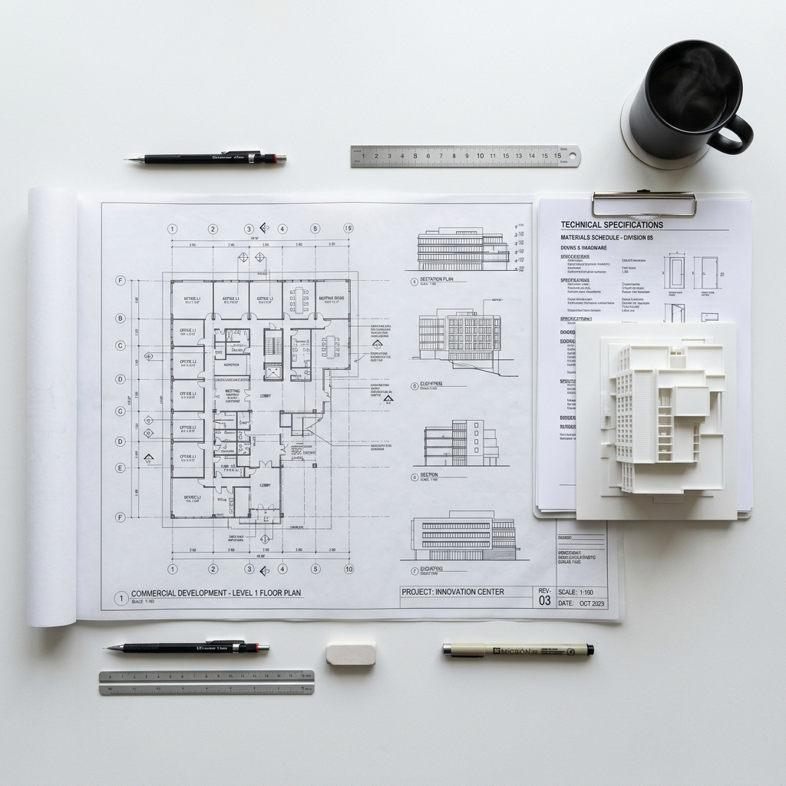

Comment la métaphore de l'arbre et l'héritage tribal redéfinissent l'expérience sociale au cœur de Douala. Une exploration sur la matérialité et la mémoire.
Au-delà du design, comment l'architecture peut servir de pont entre tradition et modernité urbaine.

Le conteneur maritime comme cellule de base d'une ville adaptable et économe en ressources.

Comment l'espace physique traduit la solidité et la confiance d'une institution financière.

Réflexions sur l'automatisation de l'ingénierie et la réduction de l'incertitude sur les chantiers.

Dossier à venir
Réglementation 2026
Dossier à venir
Matériaux Durables